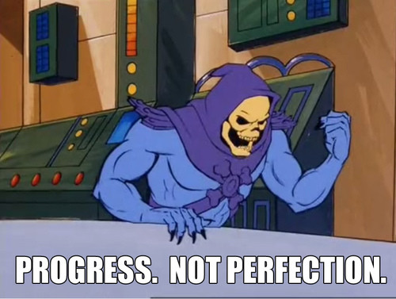

We replaced whiteboard collaboration with Excalidraw
Open source and free
Hand-drawn aesthetic
Live collaboration

Rise of AI coding
Documentation renaissance
Text-based docs stored in Git with code
Tools improve with context from docs
How do diagrams fit into this?
Investor deck experiment
Can you generate me a software platform architecture diagram in the style of an AWS diagram.
This diagram will go in an investor deck so must look professional.
It should show:
- A react native mobile app
- The app should be calling an API which lives on AWS and connects to a postgres RDS database
- The API is making calls to the external APIs:
- Anthropic
- Strava
- Garmin
- Apple HealthKit
- The API also has a data science service which it calls which is also hosted on AWS
flowchart TD
A[Drawing] --> D[AI Coding Tool]
B[Dodgy Diagram] --> D
C[Text-based Documentation] --> D
D --> E[Mermaid Diagram]
E --> F{Issues with diagram?}
F -->|No| G[We're Done]
F -->|Yes| H[Import Excalidraw]
H --> I[Edit]
I --> J[Export to repo]
flowchart TD
A[Drawing] --> D[AI Coding Tool]
B[Dodgy Diagram] --> D
C[Text-based Documentation] --> D
D --> E[Mermaid Diagram]
E --> F{Issues with diagram?}
F -->|No| G[We're Done]
F -->|Yes| K{Fight with AI tool}
K -->|Lose| H[Import Excalidraw]
K -->|Win| G
H --> I[Edit]
I --> J[Export to repo]
J --> G